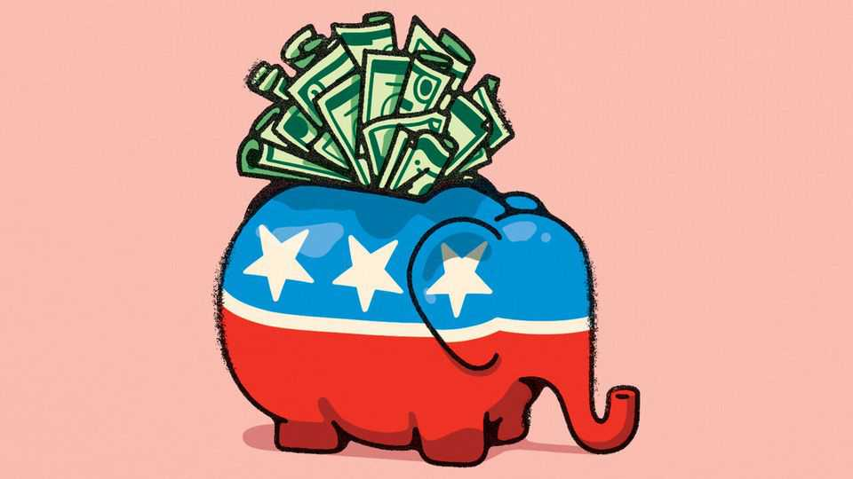
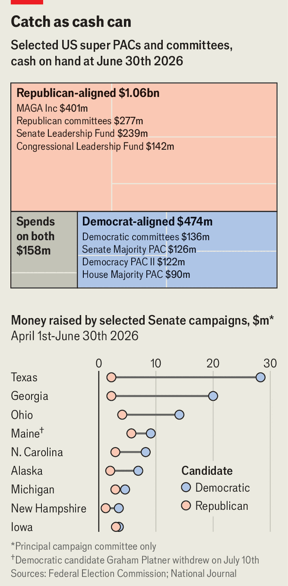

The problem with Republican fundraising
Democratic candidates are outraising their rivals

Aug 20th 2026
Before the midterm elections Republicans claim to have at least one thing going for them: money, and lots of it. At first glance, the latest filings with the Federal Election Commission show Republicans with a staggeringly large cash advantage. Across their party apparatus and political action committees, or PACs, Republicans have amassed around $1bn, more than twice as much as Democrats have (see chart).
However, this should give Republicans scant encouragement. The party’s biggest war-chest belongs to MAGA Inc, Donald Trump’s super PAC, and the president has declined to say how much he will contribute to individual campaigns. While Republicans remain captive to the president’s whim, Democratic fundraising is decentralised. Individual candidates are outraising their opponents in competitive races. That means they have more cash on hand and more enthusiastic supporters, too.

Money cannot buy victory, but it is not immaterial, either. Candidates raise money to pay for campaign operations and to buy advertisements. Get-out-the-vote efforts can boost a candidate’s prospects, though the effect seems to decline when a campaigner is already well known. In competitive general elections for federal office, it is usually hard to measure the effect of extra advertisements because airwaves are already saturated. The recent governors’ primary in Wisconsin provided a rare natural experiment, albeit not in a general election. Francesca Hong, a Democratic Socialist, did not buy a single television ad. The Economist’s analysis, controlling for factors such as voters’ median age and education level by county, suggests that her lack of television advertising helped ensure her defeat in the Democratic primary on August 11th.
If the amount of cash matters, how campaigns raise it does, too: money is both a factor in a campaign’s success and an indicator of its health. Strong candidates tend to attract donations from ordinary voters in their states, a sign of their enthusiasm. That is why The Economist includes individual donations as one predictor in our forecast of the midterm elections. It is also another reason why Republicans cannot be confident that their cash advantage will help them.
Mr Trump has proved particularly skilled at mobilising donors (think of those $1m-a-plate dinners at Mar-a-Lago). But those donations have flowed into his super PAC, not to candidates themselves. MAGA Inc accounts for at least $400m of the total Republican haul, a reminder that the president remains the party’s source of power.
He looks reluctant to share it. MAGA Inc has spent just $2.3m, 0.6% of its resources, to help Republicans win elections so far. “I could spend it on pretty much anything I want,” Mr Trump boasted recently. Though the president claims he will use his PAC to help Republicans, the group has yet to announce its spending plans, or even to share them with Republican allies.
While Republicans’ fundraising is centralised—powerful in theory but limited in effect—Democrats are seeing the opposite phenomenon. The party’s centralised fundraising is sputtering. Small donors are fed up with what they perceive to be the Democratic establishment. Top donors remain frustrated by how their money was spent during the 2024 presidential campaign; that the Democratic National Committee (DNC) is $2m in debt is not instilling confidence. The DNC, according to a quip in Washington, now stands for “Do Not Contribute”. But many individual Democratic candidates are not suffering—donors are still giving money, but skirting the central committee and going straight to the campaigns.
Take the Senate race in Texas. James Talarico, the Democratic nominee, raised $28m in the second quarter of this year, while his Republican opponent, Ken Paxton, raised a puny $1.6m. More than half of Mr Talarico’s total came from small donations, compared with just 12% for Mr Paxton. The Democratic candidate is netting big donations, as well. Reid Hoffman, a major donor who has shunned the DNC, recently handed $10m to a pro-Talarico PAC.
Democratic candidates hold an advantage in other states, too. In the nine most competitive Senate races, they had around $116m in cash on hand, compared with just $51m for Republicans. In a reflection of voters’ enthusiasm, on average small donors—individuals who pledge less than $200 to a campaign—accounted for 51% of donations to Democratic candidates, compared with 24% for Republicans.
Republican party officials insist that Democratic candidates’ cash advantage is temporary, and that the money sitting in Republican coffers—including the president’s—will soon flow to campaigns. With the midterms less than three months away, candidates would be excused for feeling a little bit restless. ■
Stay on top of American politics with The US in brief, our daily newsletter with fast analysis of the most important political news, and Checks and Balance, a weekly note that examines the state of American democracy and the issues that matter to voters.